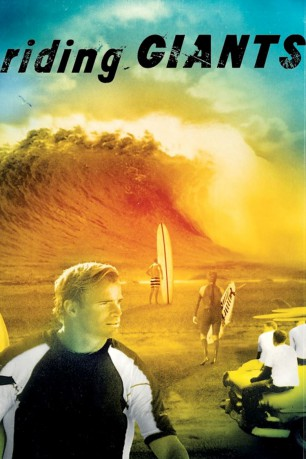

#11655 Riding Giants
 
 IMDB-Wertung: 7.9 / 10
IMDB-Wertung: 7.9 / 10  Tomatometer: 93
Tomatometer: 93  Metascore: 80
Metascore: 80 
1777 wird der britische Entdecker Kapitän James Cook erster westlicher Augenzeuge des hemmungslosen Surf-Vergnügens der Polynesier. Die calvinistischen Missionare verbieten in der Folge den doch recht gefährlichen Spaß, bis in den 40er Jahren des letzten Jahrhunderts die Jungs und ein paar Mädels an der US-Westküste das Surfen zum Lifestyle machen. Die 50er Jahre stehen im Zeichen von Brett-Heroen wie Greg Noll, die den Sport endgültig salonfähig machen. In den Neunzigern erreicht der Extremsport schließlich das offene Meer.
Jahr: 2004
Dauer: 101 Minuten
FSK: 0
Land: USA Studio: Sony Pictures ClassicsTonspuren:
Untertitel:
Auflösung: SD (512x272) Größe: 701 MB
Genre: Dokumentation, Sport, Geschichte
Regisseur: Stacy Peralta
Drehbuch: Stacy Peralta, Sam George
Soundtrack: Ric Markmann
Darsteller:
- Laird Hamilton als Himself
- David H. Kalama Jr. als Himself
- Dave Kalama als Himself
- Titus Kinimaka als Himself
- Gerry Lopez als Himself
- Peter Mel als Himself
- Greg Noll als Himself
- Gabrielle Reece als Herself
- Kelly Slater als Himself
- Grant Washburn als Himself
- Jeff Clark als Himself
- Pat Curren als Himself
- Darrick Doerner als Himself
- Sarah Gerhardt als Herself
- Dru Harrison als Himself
- Brian L. Keaulana als Himself
- Buzzy Kerbox als Himself
- Mickey Munoz als Himself
- Evan Slater als Himself
- Anthony Tashnick als Himself
- Darryl Virostko als Himself
- Mike Waltze als Himself
Datei: X:\Dokumentationen\Sport\Riding Giants (2004, FSK0, 512x272).avi seit 13.08.2019
Festplatte: HD Serien(SU-Z)+Dokus+Musik
 Es gibt insgesamt 34 Filme in der Gruppe 'Dokumentationen\Sport'
Es gibt insgesamt 34 Filme in der Gruppe 'Dokumentationen\Sport'